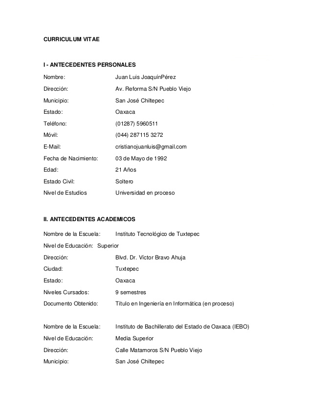
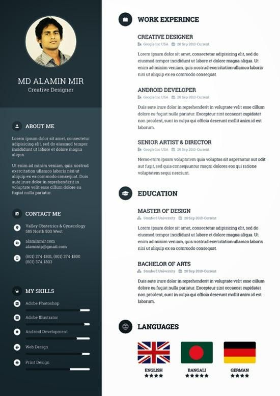

Si tuvieras que contratar a alguien, ¿a quien contratarias?
DISCLAIMER: TODO EL CONTENIDO Y PARTE DEL DISEÑO NO SON DEFINITIVOS, ESTE SITIO ES SOLO PARA MOSTRARTE PARTE DEL CONCEPTO DE MI IDEA


Evidentemente, por más que ambos esten presentables y sin faltas de ortografia, preferirias al segundo y ¿por que motivo? por que es más llamativo. Hoy en dia, con tan pocos puestos de trabajo y tantas personas dispuestas a competir por un mismo puesto de trabajo es importante destacar entre el monton de solicitudes de trabajo, por eso un curriculum llamativo y prolijamente presentado pueden hacer mas diferencia de la que podrias imaginar
¿Que ofrecemos?
Ofrecemos 2 tipos de servicio: Uno básico que consiste en el diseño desde 0 de un curriculum adecuado a las mas altas exigencias de diseño de la actualidad y el otro, que adicionado a eso, hace que nos encarguemos de difundir tu curriculum entre los sitios más famosos de argentina de "recruiting" (busqueda de trabajo) y ademas de eso dar aviso al cliente ante cualquier aviso de empleo que se ajuste a sus capacidades y pretensiones laborales (todo esto ultimo durante una semana desde que se realiza el pago)
¿Que necesitas para obtener tu curriculum profesional?
Simplemente, abonar cualquiera de los servicios que necesites, luego de eso llenar el formulario con tus datos y un plazo maximo de 48hs desde acreditado el pago (la demora depende del medio de pago usado para acreditar el dinero) te estaremos enviando al email que dejaste para que nos contactemos el CV terminado en formato PDF para que lo imprimas en blanco y negro o color (¡Es preferible que lo imprimas a color, pero estan hechos para verse bien en ambas formas ;)!)